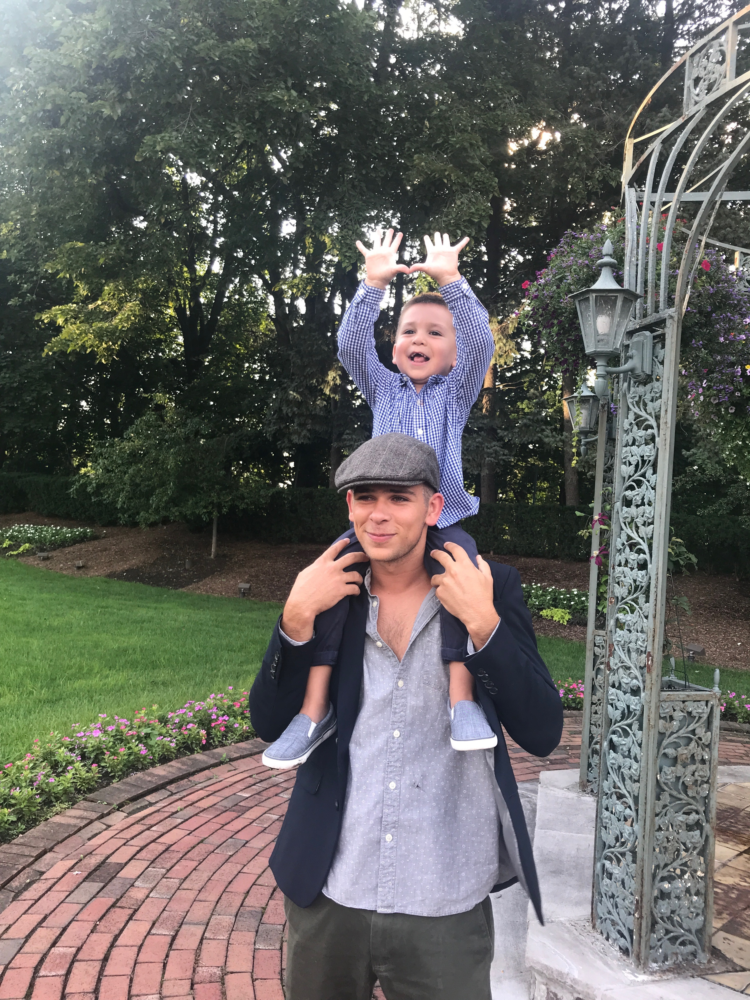

Bobby Campbell

www.bcampbellmusic.com | 862-377-4324 | bobbycampbell.music@gmail.com
EDUCATION
|
University of Miami: Frost School of Music, Coral Gables, Florida | GPA: 3.981
|
Graduation: 05/2020 |
Bachelor of Music Candidate
Media Writing and Production, Performance Certificate in Classical Guitar, Minor in Music Business
- Honors: President’s Music Scholarship, Recipient of Jazz Solo Award, Lakeland Bank Scholarship, Semper Fidelis Award for Musical Excellence.
- Relevant Coursework: Wrote/Recorded/Produced original works mirroring/emulating the compositional styles and recording techniques of musical decades from the 1950’s to 2000’s and current popular music.
- Guitar Instruction: Carol Hamersma (05/2014- 10/2015), Maestro Rafael Padron (09/2016- Present)
ACTIVITIES/AFFILIATIONS
Hurricane Productions: Patio Jams, University of Miami
|
Patio Jams Chair
|
09/2016 - Present |
- Budgeted $20,000 to hire musical performers/ promotional items/ catering/ etc.
- Scheduled executive board meetings and office hours.
- Booked approximately 30 plus artists and vendors.
- Micromanaged the delegation and fluency of the organization in order to speed up growth of committee and its events.
Music Affiliations
- West Milford Highlander Jazz Ensemble (11/2012 – 06/2016)
- West Milford Highlander Marching Band/Bagpipe Corp (09/2012 – 06/2016)
- Claddagh Pipe Band (09/2012 – Present)
- Frost Band of the Hour (08/2016 – 02/2017)
- Frost Classical Guitar Ensemble(s) (08/2016 – Present)
WORK EXPERIENCE
| Campbell Exteriors, Oak Ridge, NJ
|
07/2014 – Present |
Laborer, Office Assistant
- Organized the handling of all roofing, siding, trim materials.
- Maintained facilities for construction.
- Organized and balanced all storewide daily sales and finances.
| AIT Glass Works, Rockaway, NJ
|
12/2014 – Present |
Quality Control
- Insured quality of all manufactured goods including surgical class.
- Worked with client relations to communicate with clients about packaging and delivery.
| Jersey Shore Music Festival, Seaside, NJ
|
05/2017 |
Assistant Audio Technician and Stage Hand
- Organized and handled all set up and breakdown of each performance.
- Responsible for sound checks and live mixes of each performing ensemble.
| Mountain Creek Resort, Vernon, NJ
|
12/2014 – 02/2015 |
Superstars Race Program Instructor
- Taught Children ages 5-10 the fundamental skills of ski racing.
- Responsible for the development of their athletic abilities.
- Maintained a safe and encouraging environment for students.
SKILLS & COURSEWORK
Technical Skills: Proficient in Microsoft Office, Mediately proficient in Logic Pro X/Finale/Pro Tools 9
Training: Master Classes with David Russel, Meng Su, Grisha Goryachev.